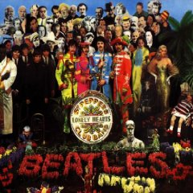
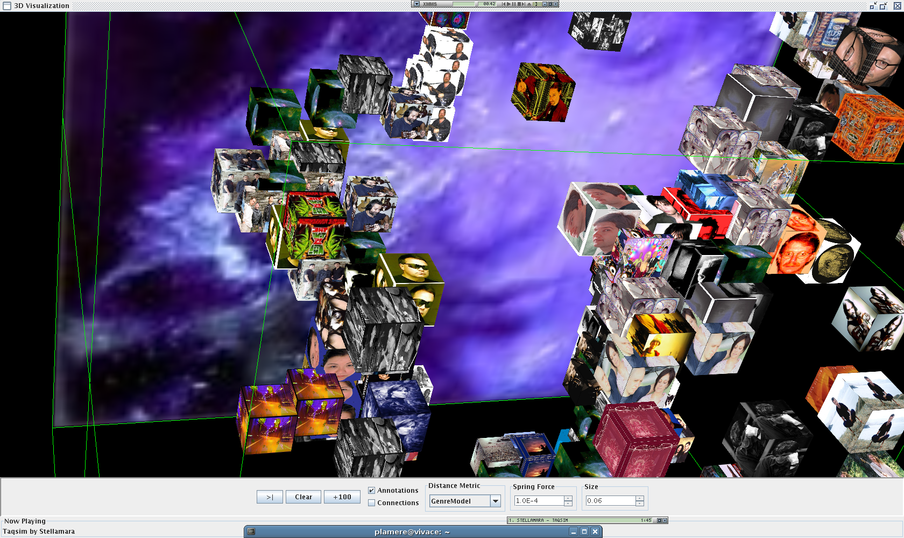

I've been having a good conversation with David Jennings about social recommenders like last.fm, and whether or not they will all converge on the same model. Check out the thread on the DJ Alchemi blog.
Thursday Apr 06, 2006
Wednesday Apr 05, 2006

Jeremy responded to my recent suggestion that Google may use advertising to fund the Google Music Store with this:
Can you picture it now.. short little audio excerpts overdubbed onto your song, based on the relevance of the lyrics:
It was twenty years ago today
Sergeant Pepper [buy Lowry's seasonings] taught the band to play
They've been going in and out of style
[Try Old Navy for all your fashion needs]
But they're guaranteed to raise a smile
[Crest keeps your smile bright!]
So may I introduce to you
The act you've known for all these years:
Sergeant Pepper's Lonely [Sign up with Match.com] Hearts Club Band
Sergeant Pepper [buy Lowry's seasonings] taught the band to play
They've been going in and out of style
[Try Old Navy for all your fashion needs]
But they're guaranteed to raise a smile
[Crest keeps your smile bright!]
So may I introduce to you
The act you've known for all these years:
Sergeant Pepper's Lonely [Sign up with Match.com] Hearts Club Band
Tuesday Apr 04, 2006
Rumors again that Google is getting ready to deploy a music store. This time all the rumors come down to the opinions of a single analyst who noticed that Google was having a party with the music industry executives.
Right now, I don't see how a Google Music store would make sense. The main market for an online music store is to fill all of those digital music players (people don't buy music to listen just on their computers anymore - if they ever did). The problem for Google is that 85% of the portable music players are Apple iPods or shuffles which use Apple's DRM. Apple doesn't license their DRM and doesn't like people messing around with it (Apple threatened to invoke the DMCA when RealNetworks tried to get their DRM'd songs to play on an iPod). So that leaves Google scraping for the other 15% of market that uses Microsoft's PlayForSure DRM. They'd be competing with Rhapsody, Yahoo, Walmart, Virgin Digital and just about every other mom and pop. There just isn't any marketshare left to make it profitable. So how could a Google music store possibly work? Well .. here are some ideas:
- Google makes their own branded iPod clone that they give away to music subscribers (like Amazon is planning to do)
- Google gives the music away and makes their money selling advertising.
- Google provides some really compelling music search and discovery tools that no one else can match.
- The courts (or France) forces Apple to license their DRM
A few days ago I mentioned PodZinger, a system that will index podcasts and make the audio avaiable in a search engine. A related system is castingWords, that will provide podcasts transcriptions at 42 cents per minute of audio. So with castingWords I could get a half-hour weekly podcast transcribed for $12 per month. The interesting thing is that CastingWords uses the Amazon Turk to do the work, using humans instead of a speech recognizer to generate the transcription. There's a sample transcript at the amazon web services blog.
Monday Apr 03, 2006
Interesting article in Wired news about Sun's push for Open-Source DRM: Reasons to Love Open-Source DRM. For a deeper dive into what this is all about, see this white paper: Project DReaM: An Architectural Overview.
Sunday Apr 02, 2006
If you look as the last.fm charts, you'll see that the song 'Such Great Heights" by the indietronic band Postal Service is the number one song. Looking a bit more closely you'll see that 'such great heights' has been a #1 or near #1 for the last six months (it was #2 on April 3, 2005). Now, don't get me wrong, I like the Postal Service, but we're not talking 'Dark side of the moon' here (with its 15 years on the Billboard 200). This is the trouble with social recommenders, they get funny feedback loops and incredible inertia. Once something is at #1 on the last.fm charts, it is guaranteed to get lots of plays and because of that ... it gets to stay #1. Don't be surprised to see 'such great heights' at #1 in a year from now, unless last.fm things adjusts their model a bit to allow other songs to more easily climb the charts.
Saturday Apr 01, 2006
Looks like there's another entry in the song identification market. MusicMarker is a technology that is (soon) to be added to devices. When you hear a song that you like, you press the MusicMarker button on the device and it records a snippet of the song. The next time you sync your device, it uploads the snippet to MusicMarker, where MusicMarker will use its fingerprinting tech to identify the song, artist and album. It seems to me that the cell phone song ID services like Shazam have a big advantage over MusicMarker. Who wants to wait until the next time you sync your mp3 player or phone to find out what song you were listening to when you can get the song info instantly via a text message with Shazam? - via engadget and Geek Zone.
On Friday at the office, I made a few enemies by printing out Elias Pampalk's PhD thesis for weekend reading (printing 180 pages on a shared printer is not always the most popular thing to do). I noticed today that Elias has a blog describing his adventures in Tsukuba Science City. Unfortunately, I can't read it (us Americans are rather bad at understanding non-English). But looking at some of the photos, it looks like Elias has hooked up with Masataka Goto. It will be interesting to see what comes out of Tsukuba ...
Friday Mar 31, 2006
Finally, a good application for speech recognition ... Podzinger uses speech recognition to index podcasts and videocasts, making this whole world of spoken audio searchable. When you search on Podzinger, podzinger will show the set of podcasts that match your query, and even allow you to directly play the content at the point that matches your query. It's an audio-based passage retrieval. PodZinger is not trying to create transcripts of podcasts, but instead to make them searchable. That means the speech recognition doesn't have to be 100% accurate (or even 85% accurate), it just has to be good enough to get the 'content' words ... which tend to be longer and less confusable than all of the typical stop words like 'of', 'a', 'and' and 'the'. Still, the text passages shown by PodZinger are suprisingly understandable, and give you a good idea whether the associated podcast is interesting enough to warrant a listen.
PodZinger also has a feature called 'the ZING index which is like the Google Zeitgeist. It reports on who and what is being talked about most of all on podcasts. Dick Cheney is topping this week's Zing Index.
The key to success for such an ambitious project is the quality of the speech engine. Speaker independent, continuous speech recognition of spontaneous speech (especially with multiple speakers, background music and noise) is very difficult. Add to that the scaling problems ... trying to process 50,000 hours of speech in a week takes a lot of CPU time. This is not a problem that I'd expect a small startup company like PodZinger to be able to tackle, but it turns out PodZinger is not really a small startup ... its tied to the venerable BBN, the research contractor that has a long history of developing speech recognition engines. BBN certainly has the know-how to deal with these issues.
Thursday Mar 30, 2006
Jeremy P. forwarded me this link to a writeup about a mashup of Pandora and Last.fm. at TechCrunch. As I said to Jeremy .. it just seems *wrong*... the big strength of last.fm is that they've figured out how to *implicity* measure what you like by watching what you are playing.. since I just put on the song 'december' by weezer, last.fm can infer that I must like it (at least a little bit) and bump up my preference score. Now what this mashup is doing is feeding last.fm with what Pandora plays not what I play. After doing this for a while last.fm will have learned what Pandora's preferences are and not mine. Imagine if every last.fm user was doing this, eventually last.fm's social recommender would have learned what Pandora prefers and will have morphed into yet another Pandora ...
Wednesday Mar 29, 2006
Get your Game On with Project Darkstar is a new article on www.sun.com
about Project Darkstar - Sun's new gaming framework designed to allow
gamers to produce massively multiplayer online games that can scale to
thousands of simultaneous players. Darkstar allows game developers
to focus on the building a fun game instead of having to figure out how
to build a scalable infrastructure ... that means a quicker time
to market, and a more reliable and scaleable system. Scalability
is key for MMOs, if an MMO can't keep up with demand it is DOA.
The SDK is free and can be downloaded from games.dev.java.net.
The SDK is free and can be downloaded from games.dev.java.net.
Tuesday Mar 28, 2006
I added a 'listening too' block on my sidebar. This shows the artists that I've been listening to lately. I'm using MusicMobs
to do this. MusicMobs is a playlist sharing, social music site.
At music mobs you can upload your music listening data (from iTunes) and
playlists and music mobs will help you find new music.

Thursday Mar 23, 2006
Sun put the Sun Grid Compute Utility online this week. Good news for all of us with big compute jobs. Perfect for domains like music information retrieval where a single analysis pass on a large music collection could take years of CPU time. Instead of waiting years for the job to complete, the job can be put on the grid and completed in a weekend. Good Stuff.
I spent some time a few months ago figuring out what it would take to get our music analysis software to run on the grid. The main question I needed to answer was "What do I need to do to my big hunk of java code to get it to run well on the Sun Grid so that I could take advantage of all of resources of the Grid" The answer, I discovered, was that there were no Java APIs for writing software for the grid and getting my Java app to run on the grid was going to be a bit of work.
The good news is that there's a group in Sun that is trying to fix this, to make sure that Java works and works well on the Sun Grid. This week these folks have issued an early access release of the 'Compute Server' (catchy name, isn't it?). The goal for the compute server is to create an environment for Java programmers so that they can easily use the Sun Grid Compute utility. The compute server provides an extremely simple API for a distributing computation across a large number of CPUs and gathering feedback and results from the computation. The compute server is integrated with NetBeans, so deploying a job to the grid is part of the development work flow. Here's a diagram that shows how the process works:

Remember, this is an early access release. The goal is to get feedback from developers. You can download the early access compute server and look at the code (there's some good examples including a grid-enabled program that calculates the digits of PI in just a couple of hundred lines of code).
I've had the lucky opportunity to talk with the developers building the compute server and have been quite impressed. These are some really smart programmers with lots of experience building distributed systems in Java. I have high hopes for the compute server.
Wednesday Mar 22, 2006
This week at the Game Developers Conference, Project Darkstar
was announced. This project, developed in Sun Labs, is designed
to help game developers deal with the difficult issues of building
massively multiplayer online games that can scale. Congrats
to the developers for making this happen! Check out the SGS and
the docs at the Project Darkstar Developer Site
Tuesday Mar 21, 2006
The new iPod ad reminds me of the Search Inside the Music album cover visualization. In this visualization, each song in the collection is represented by the album art for the song. Songs are positioned in 'music similarity' space. Songs that sound similar are close together.

This blog copyright 2010 by plamere